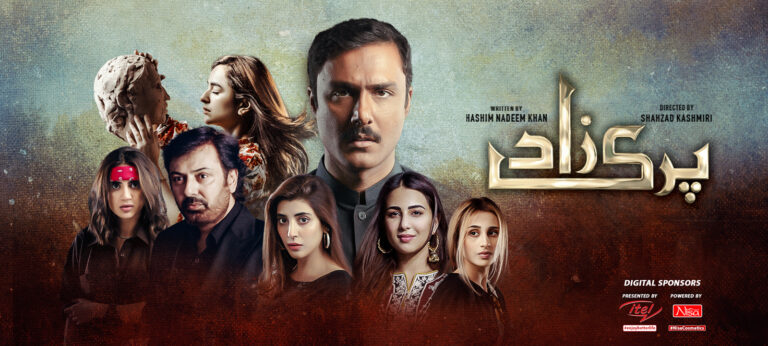

Parizaad
Parizaad is a deeply emotional and thought-provoking Pakistani drama that tells the story of a humble, dark-skinned man navigating a society obsessed with appearances and status. Based on Hashim Nadeem's novel, the drama follows Parizaad’s journey from being mocked and underestimated to rising in wealth and influence, all while retaining his pure heart and poetic soul. With a powerful performance by Ahmed Ali Akbar, poetic dialogues, and rich storytelling, *Parizaad* explores themes of identity, loneliness, and self-worth. It's a rare drama that leaves a lasting impact, making it one of the most critically acclaimed series in recent years.